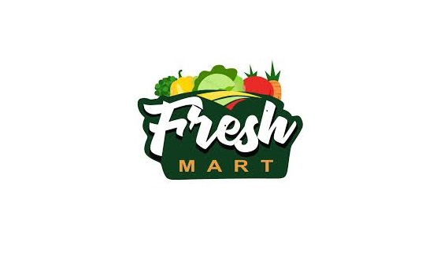

FreshMart is a leading online supermarket and grocery delivery service that offers over 10,000 products for same-day delivery.FreshMart is looking for insights to understand its best strategies. They are interested in knowing which products and regions they should target, improve, or avoid, determining the highest and lowest revenue-generating areas and the difference between them. They also want to compare the cost of baby food items purchased by Africans and Europeans.To analyze FreshMart’s data from 2010–2017, I used Microsoft Excel tools for data extraction, transformation, loading, and cleaning processes. Additionally, I utilized Excel visualization tools to display FreshMart’s business challenges and provide actionable insights, and recommendations..

Film or movie distribution is the process of making films available for audience viewing. This means having a film be purchased or rented by a distribution company, which will then take the steps of marketing and displaying the film. Distribution and the path to it can take many different forms, but there is a general process most films follow. If a distributor thinks your film is a good fit for them, a contract will be signed and the distributor will do everything possible to maximize profits, licensing the movie in as many countries as they can for as long as they can. In this Project, World Movies Distribution seeks insights on how to determine the movie distribution companies with the highest worldwide gross, identifying the top 5 distributors with the highest domestic and international gross, they also want to ascertain the domestic, international, and worldwide gross for movies released between January and December 2022, and to compare the titles of the movies with the highest and lowest worldwide gross. Movie distributors can leverage data analytics to better understand audience preferences, behavior, and trends.